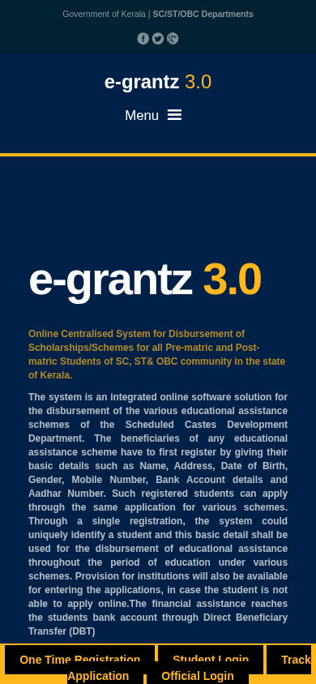
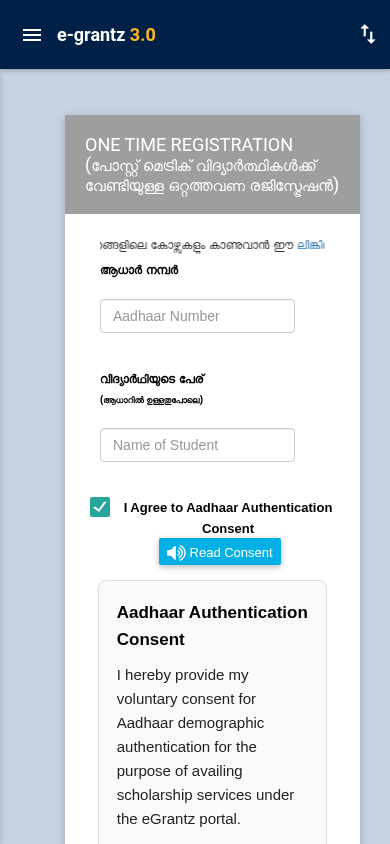

Kerala OEC Post-Matric Scholarship for studying outside Kerala: apply by 30 November 2026
Kerala students in the OEC or OBC(H) category who study in national institutions outside Kerala can apply for this scholarship on the e-Grantz portal. The last date for 2026-27 is 30 November 2026.
What is it?
The OEC Post-Matric Educational Assistance scheme gives educational scholarship to OEC (Other Eligible Communities) students from Kerala. The Backward Classes Development Department (BCDD) page says it covers OEC post-matric students in the state and those who got admission to courses outside the state, including allotment from central agencies. The scheme covers lump sum grant, monthly stipend and legitimate fees for students from +2 to PhD.
The e-Grantz notice (in Malayalam) invites applications from OEC and OBC(H) post-matric students studying in institutions of national importance outside the state. The last date is 30.11.2026.
Who can apply?
- The student must be in the Kerala State OEC list and have got admission through merit or reservation (BCDD page).
- The BCDD page says there is no income limit.
- The student studies from +2 to PhD level, in a course covered by the scheme.
- For the outside-state notice, the institution must be one of national importance, as listed in the notice.
The BCDD page also says to apply within two months after admission. The 2026-27 notice sets 30 November 2026 as the last date. Do not wait for the last day.
How to apply, step by step
Checked on the live e-Grantz portal on 19 October 2026.
- Open the official e-Grantz portal: egrantz.kerala.gov.in.
- Choose One Time Registration and enter the student's Aadhaar number and name exactly as in Aadhaar, then tick the Aadhaar authentication consent. This registers the student once for all schemes.
- Log in with Student Login and complete the student profile - address, date of birth, gender, mobile number, bank account details - and add your qualifications.
- Choose and apply for the OEC Post-Matric scheme (for students studying outside Kerala) under Backward Classes Development Department schemes, with the documents listed on the portal.
- Submit and note your application reference. Track status any time using Track Application with your Aadhaar number and date of birth.
- The assistance is paid by Direct Benefit Transfer (DBT) to the student's bank account - keep the account active and Aadhaar-seeded.


Steps 3-4 happen inside the student's login, so they are not shown as screenshots.
Video guides
We searched YouTube on 19 October 2026 for a step-by-step application video for the OEC Post-Matric (outside Kerala) scheme on the current e-Grantz 3.0 portal in English and in Malayalam. We could not verify one that matches this scheme and the current portal, so we are not linking any rather than risk outdated or unrelated instructions.
Cost, eligibility and limits
| Cost | Free to apply. |
|---|---|
| Who | OEC (and OBC(H) in the outside-state notice) students from Kerala. |
| Benefit | Lump sum grant, monthly stipend and legitimate fees, per the BCDD page. A fee list in the e-Grantz document sets a ceiling for each type of fee. |
| Last date | 30 November 2026 (e-Grantz notice). |
| Helpline | BCDD: 0471 2727378, bcddkerala@gmail.com (from the BCDD site). |
Stay safe
- Apply only on egrantz.kerala.gov.in. No agent can speed it up.
- Do not pay anyone to fill the form.
Frequently asked questions
What is the last date?
30 November 2026 for the outside-state scheme, according to the e-Grantz notice.
Is there an income limit?
The BCDD scheme page says no limit.
Who is OEC?
Students in the State OEC list. Check your community against the list.
How is the money paid?
Directly to your bank account.
Is Kedavilakku the same scheme?
No. Kedavilakku is a different scheme, and its last date was 30 September 2026, which has passed.
Sources: e-Grantz Kerala, BCDD scheme page, e-Grantz fee ceiling document. Checked 6 October 2026.